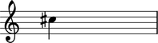
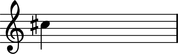
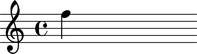

The Abjad Accidental class
raise Exception
The Abjad Accidental class models accidentals.
Public interface
Attributes
Methods
Overloads
Attributes
Read-only attribute defined here.
Returns number of semitones adjustment carried by self.
abjad> note = Note(13, (1, 4))
abjad> note.pitch.accidental.adjustment 1
Dictionaries
Read-only attribute defined here.
Returns numbers of semitones equal to accidental string.
Accepts accidental string.
abjad> note = Note(13, (1, 4))
abjad> note.pitch.accidental.accidentalStringToAdjustment['tqs'] 1.5
Read-only attribute defined here.
Returns accidental string corresponding to numeric input adjustment.
Accepts numeric adjustment.
abjad> note = Note(13, (1, 4))
abjad> note.pitch.accidental.adjustmentToAccidentalString[-1] 'f'
Methods
abjad> note = Note(13, (1, 4))
abjad> note.pitch.accidental.hasNone False
Overloads
abjad> note = Note(13, (1, 4))
abjad> note.pitch.accidental == 's' True
Comments
To do
Reimplement Java-style hasNone as read-only none attribute.
LilyPond implements several different accidental handling methods. Abjad outputs LilyPond input with no special indications for accidental handling. Nontonal music may prefer to use the LilyPond
'forgetoption for handling accidentals.